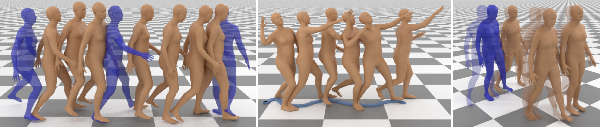

Setareh Cohan (1)Guy Tevet (1, 2)Daniele Reda (1)Xue Bin Peng (3, 4)Michiel van de Panne (1)
(1) University of British Columbia(2) Tel-Aviv University(3) Simon Fraser University(4) NVIDIA

Abstract
Motion in-betweening, a fundamental task in character animation,
consists of generating motion sequences that plausibly interpolate
user-provided keyframe constraints. It has long been recognized
as a labor-intensive and challenging process. We investigate the
potential of diffusion models in generating diverse human motions
guided by keyframes. Unlike previous inbetweening methods, we
propose a simple unified model capable of generating precise and
diverse motions that conform to a flexible range of user-specified
spatial constraints, as well as text conditioning. To this end, we
propose Conditional Motion Diffusion In-betweening (CondMDI)
which allows for arbitrary dense-or-sparse keyframe placement and
partial keyframe constraints while generating high-quality motions
that are diverse and coherent with the given keyframes.We evaluate
the performance of CondMDI on the text-conditioned HumanML3D
dataset and demonstrate the versatility and efficacy of diffusion
models for keyframe in-betweening. We further explore the use
of guidance and imputation-based approaches for inference-time
keyframing and compare CondMDI against these methods.
@article{
CondMDICohan2024,
author = {Setareh, Cohan and Tevet, Guy and Reda, Daniele and Peng, Xue Bin and van de Panne, Michiel},
title = {Generating Human Interaction Motions in Scenes with Text Control},
year = {2024},
publisher = {Association for Computing Machinery},
address = {New York, NY, USA},
booktitle = {ACM SIGGRAPH 2024 Conference Proceedings},
location = {Los Angeles, CA, USA},
series = {SIGGRAPH '24}
}